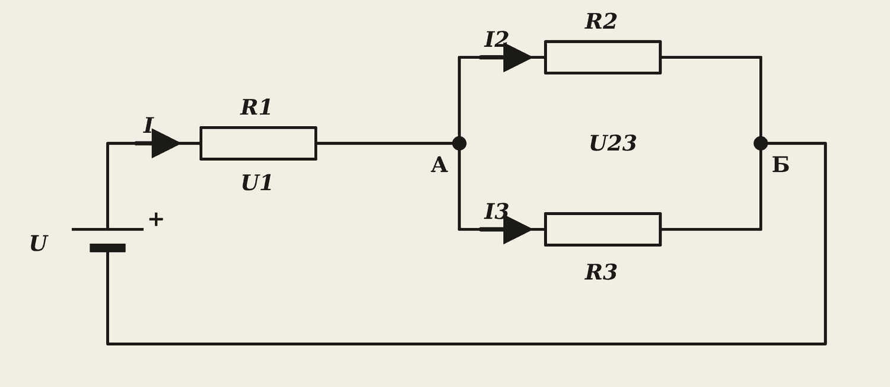
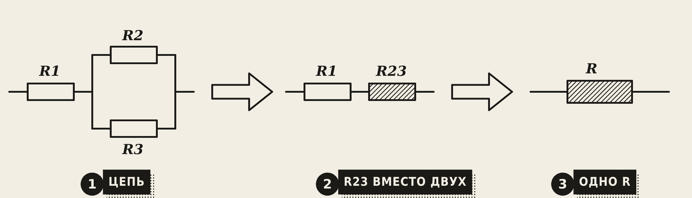
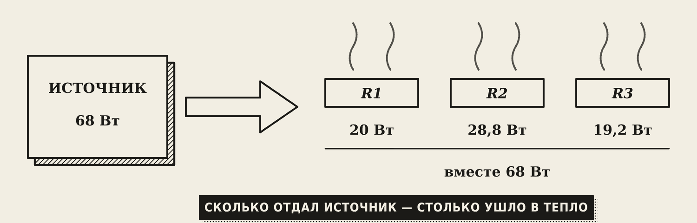
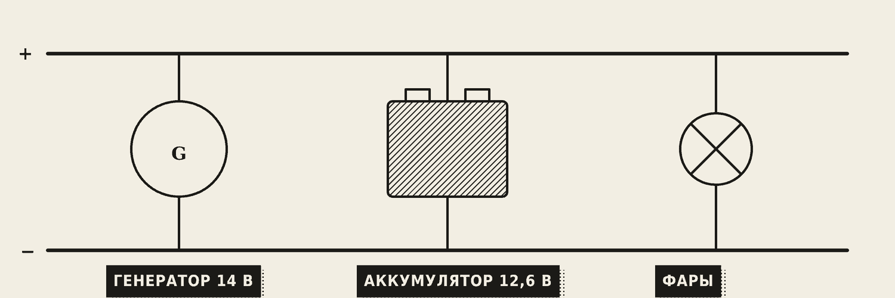

1. Что нужно сделать
Смешанная цепь из трёх резисторов: найти все токи и напряжения и проверить ответ. Вариант — ваш номер в журнале, таблица вариантов — в конце бланка отчёта.
Понадобятся калькулятор и правила из тетради по билетам: Т5–Т8.
2. Схема и образец

Резистор R1 стоит в линию (последовательно) с источником. Резисторы R2 и R3 стоят рядом (параллельно) — между одними и теми же точками А и Б.

Сначала сворачиваем цепь в один резистор, потом разворачиваем обратно и находим всё по закону Ома.
Образец. Дано: U = 34 В, R1 = 5 Ом, R2 = 20 Ом, R3 = 30 Ом.
- Параллельные R2 и R3: R23 = R2 · R3 / (R2 + R3) = 20 · 30 / 50 = 600 / 50 = 12 Ом. Проверка: 12 меньше и 20, и 30 — верно.
- Вся цепь: R = R1 + R23 = 5 + 12 = 17 Ом.
- Общий ток: I = U / R = 34 / 17 = 2 А.
- Напряжения: U1 = I · R1 = 2 · 5 = 10 В; U23 = I · R23 = 2 · 12 = 24 В.
- Токи ветвей: I2 = U23 / R2 = 24 / 20 = 1,2 А; I3 = U23 / R3 = 24 / 30 = 0,8 А.
Запомните
Сопротивление двух параллельных резисторов всегда меньше самого маленького из них. Если получилось больше — ошибка.
Три проверки

- Первый закон Кирхгофа (для узла): сколько тока втекло, столько и вытекло. I2 + I3 = 1,2 + 0,8 = 2 А = I. Совпало.

- Второй закон Кирхгофа (для контура): напряжения на резисторах в сумме равны напряжению источника. U1 + U23 = 10 + 24 = 34 В = U. Совпало.

- Баланс мощностей: сколько отдал источник, столько ушло в тепло. Источник: P = U · I = 34 · 2 = 68 Вт. Резисторы: 2² · 5 + 1,2² · 20 + 0,8² · 30 = 20 + 28,8 + 19,2 = 68 Вт. Совпало.
Вывод для отчёта: проверки сошлись, токи найдены верно. Через R2 идёт больший ток, потому что его сопротивление меньше.
Задача со звёздочкой

В автомобиле генератор, аккумулятор и фары включены параллельно. Если генератор даёт больше, чем аккумулятор, ток идёт в аккумулятор — он заряжается. Ток аккумулятора при этом получается со знаком «минус». Так законы Кирхгофа показывают, кто кого заряжает.
3. Проверьте себя в браузере
Когда расчёт готов, откройте лабораторию «Цепи постоянного тока», вкладку «Смешанная цепь», и введите номер варианта. На схеме появятся амперметры и вольтметры — сравните их с вашими числами. Сначала считаем, потом проверяем.
4. Как оформить и защитить работу
В отчёте: схема, «Дано» из своего варианта, все шаги с формулами и числами, три проверки, таблица результатов, вывод.
Типичные ошибки:
- R23 получилось больше R2 или R3 — неверно посчитали параллельное соединение.
- I2 + I3 не равно I — делили U, а не U23.
- Забыли единицы измерения.
Словарик
- Последовательное соединение — резисторы «в линию», ток одинаковый, сопротивления складываются.
- Параллельное соединение — резисторы «рядом», напряжение одинаковое, токи складываются.
- Узел — точка, где сходятся три провода и больше.
- Контур — замкнутый путь по цепи.
- Баланс мощностей — мощность источника равна сумме мощностей всех резисторов.
Эталоны в тетрадь
Перепишите в тетрадь по билетам — каждый эталон на отдельную страницу, с рисунком и строкой «Мой пример».
Последовательное соединение
Последовательное соединение резисторов: ток, напряжения, общее сопротивление. Пример.
- Резисторы идут один за другим, «в линию». (Нарисуйте схему.)
- Ток везде одинаковый. Напряжения складываются: U = U₁ + U₂.
- Общее сопротивление: R = R₁ + R₂ + R₃.
- Пример: старая ёлочная гирлянда — перегорела одна лампочка, и гаснут все.
Параллельное соединение
Параллельное соединение резисторов: токи, напряжение, общее сопротивление. Почему потребители в сети включают параллельно.
- Резисторы подключены «рядом», к одним и тем же точкам. (Нарисуйте схему.)
- Напряжение везде одинаковое. Токи складываются: I = I₁ + I₂.
- Общее сопротивление меньше самого маленького. Для двух: R = R₁·R₂ / (R₁ + R₂).
- Пример: все розетки в квартире. Каждый прибор получает свои 220 В и работает независимо от других.
Законы Кирхгофа
Первый и второй законы Кирхгофа. Пример для узла и контура.
- Первый закон: сколько тока втекло в узел, столько и вытекло (как вода в разветвлении труб). ΣI = 0.
- Пример: втекает 5 А, в одну ветку уходит 3 А → в другую 2 А. (Рисунок узла.)
- Второй закон: в замкнутом контуре сумма ЭДС равна сумме напряжений на резисторах: ΣE = ΣI·R.
- Пример: батарейка 12 В и две лампы последовательно → напряжения на лампах в сумме дают 12 В.
Режимы работы цепи
Режимы работы цепи: холостой ход, номинальный, короткое замыкание. Баланс мощностей.
- Холостой ход: цепь разомкнута, тока нет (зарядка в розетке без телефона).
- Номинальный режим: прибор работает так, как написано в паспорте.
- Короткое замыкание (КЗ): провода соединились напрямую, ток очень большой. Опасно: перегрев, пожар. Защита — автомат в щитке («выбило пробки»).
- Баланс мощностей: сколько мощности дал источник, столько забрали потребители: ΣE·I = ΣI²·R.
- В сварке: коснулись электродом детали — это КЗ. Сварочный аппарат устроен так, чтобы выдержать его.
Проверь себя
Сначала ответьте сами — в тетради или вслух. Потом нажмите на вопрос, чтобы увидеть ответ.
1R2 = 20 Ом и R3 = 30 Ом включены параллельно. Чему равно R23?
20 · 30 / (20 + 30) = 12 Ом.
2В узел втекает 5 А, в одну ветку уходит 3 А. Сколько уходит в другую?
2 А (первый закон Кирхгофа).
3Источник 34 В, на R1 падает 10 В. Какое напряжение на остальной части цепи?
24 В (второй закон Кирхгофа).
4Как проверить, что все токи найдены правильно?
Тремя проверками: первый закон Кирхгофа для узла, второй — для контура, баланс мощностей.
Попробуйте в лаборатории
Откройте на телефоне или компьютере — ничего устанавливать не нужно.
Ответы к «Проверь себя»
- 20 · 30 / (20 + 30) = 12 Ом.
- 2 А (первый закон Кирхгофа).
- 24 В (второй закон Кирхгофа).
- Тремя проверками: первый закон Кирхгофа для узла, второй — для контура, баланс мощностей.